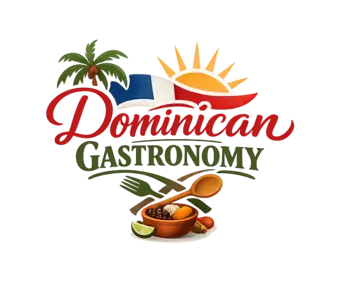
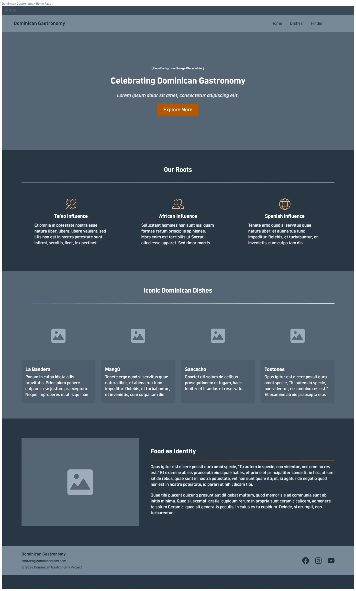
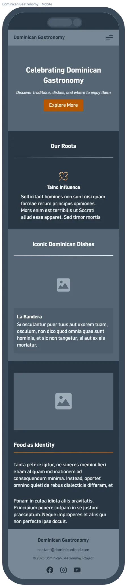

Project Name: Dominican Gastronomy

This project is a three-page website dedicated to celebrating Dominican gastronomy. It will highlight traditional dishes, cultural influences, and provide interactive tools for users to explore where they can enjoy these meals locally.
Page Structure
Page 1 | Introduction to Dominican Gastronomy
- Overview of cultural roots (Taíno, African, Spanish influences).
- Images of iconic dishes such as La Bandera Dominicana, Mangú, and Sancocho.
- Narrative on how food reflects Dominican identity and traditions.
Page 2 | Featured Traditional Dishes with Modals
- Showcase 4–6 popular dishes (Mofongo, Pastelón, Habichuelas con Dulce).
- Each dish includes description, cultural meaning, ingredients, and fun facts.
- Content dynamically loaded from a JSON file.
- Modals (
<dialog>) for recipes, preparation steps, and photos.
Page 3 | Interactive Restaurant Finder
- Form with input fields: dish name, user’s location, preferred dining style.
- On submission, results display recommended restaurants or food spots.
- Recommendations simulated with local JSON data.
Scenarios
Scenario 1: I’m visiting the Dominican Republic for the first time. Which traditional dishes should I try to truly experience Dominican culture?
The site will provide an introduction to iconic dishes such as La Bandera, Mangú, and Sancocho, explaining their cultural significance and how they reflect Dominican identity.
Scenario 2: Where can I find authentic Dominican food near me, and what type of dining experience should I expect?
The interactive restaurant finder will allow users to search by dish, location, and dining style (casual, family, gourmet), then display recommendations with descriptions and specialties.
Color Scheme
Soft White: #eff1ed
Dark Olive: #373d20
Earth Green: #717744
Light Khaki: #bcbd8b
Warm Brown: #766153
Typography
Montserrat (sans-serif) for titles, headlines, and section headers.
Mulish (sans-serif) for body text and descriptions.
Wireframes

